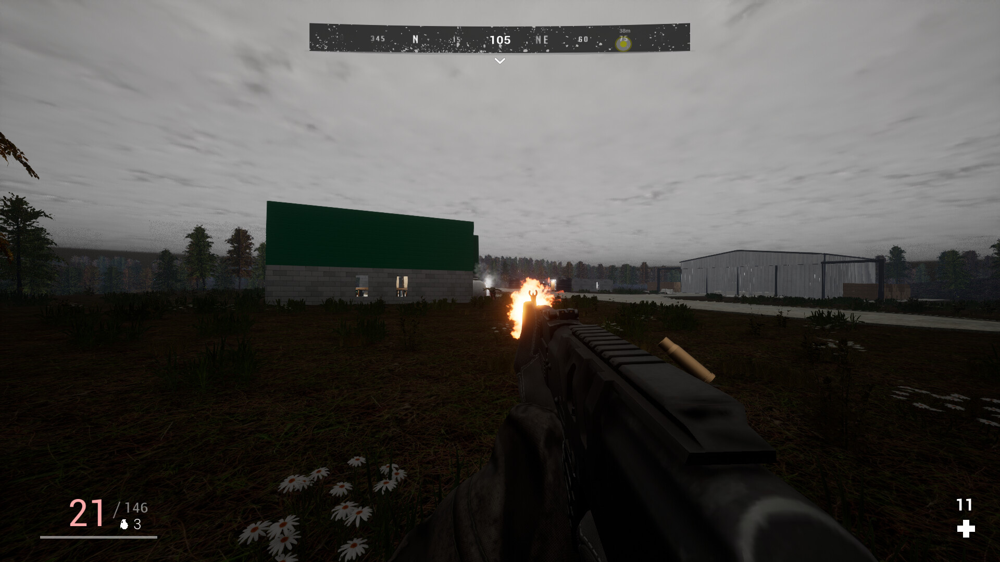
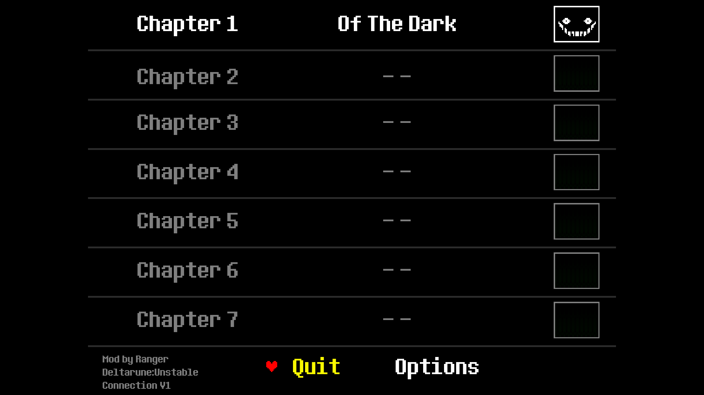

2022–2024

Hazardous Island is a first-person survival game developed using Unreal Engine. The project focuses on exploration, environmental storytelling and survival mechanics.
2025 • Concept

An experimental Unreal Engine concept inspired by Deltarune. Rather than recreating the original game, this prototype explores gameplay ideas, dialogue presentation and atmosphere inside Unreal Engine.